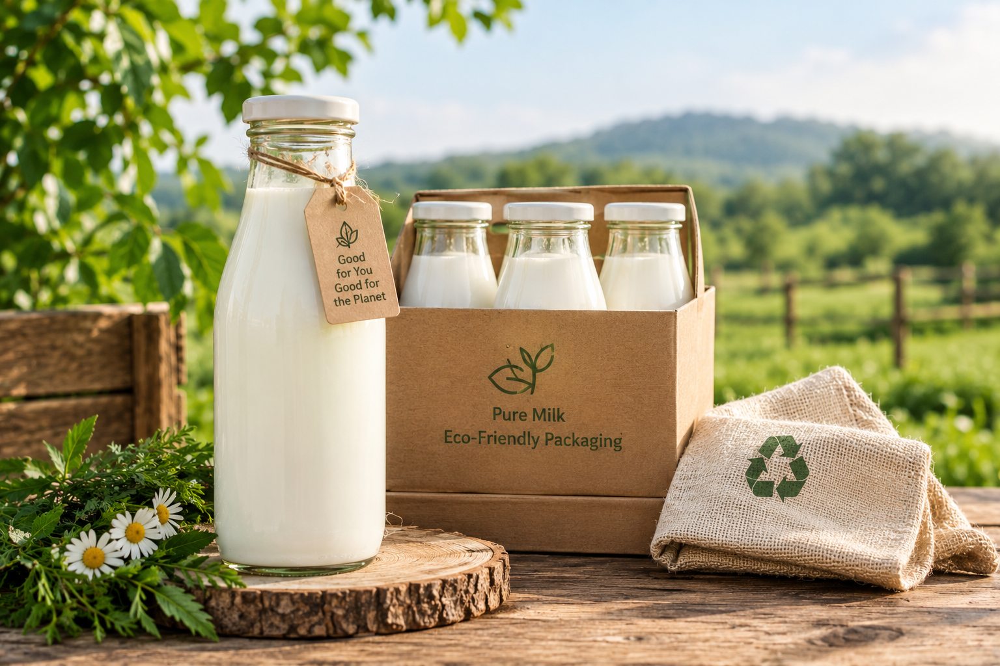

No Added Water
We aim to supply milk without intentional dilution. Quality checks and honest sourcing are important parts of our promise.
PURE BY NATURE
Discover our approach to milk quality, thoughtful packaging and everyday nourishment.
OUR PROMISE

We aim to supply milk without intentional dilution. Quality checks and honest sourcing are important parts of our promise.
We work toward sourcing from trusted suppliers and keeping a clear record of where our milk comes from.
Clean containers, hygienic handling and suitable refrigeration help protect milk quality from collection to delivery.
We believe customers deserve clear information about sourcing, storage, processing and the product they purchase.
Food safety matters: milk should be handled hygienically, kept refrigerated and pasteurised where required. Do not assume raw milk is safe to drink without appropriate treatment.
BETTER PACKAGING CHOICES

A bottle that can make more than one journey.
Our packaging approach focuses on reusable glass bottles and responsible handling. Reusing a bottle can reduce dependence on single-use packaging when bottles are returned, cleaned and sanitised properly.
Durable bottles can be returned and reused through a suitable collection and sanitising system.
A bottle-return option can help reduce packaging waste over time.
We aim to use practical packaging and avoid unnecessary wrapping wherever possible.
EVERYDAY NOURISHMENT
Milk can be part of a balanced diet. Its nutritional content varies by type and processing.
Milk provides calcium, which supports normal bone and teeth health.
Milk contains protein that helps the body maintain and repair tissues.
Milk provides energy and nutrients such as vitamin B12; levels depend on the product.
Milk can be enjoyed on its own or used in everyday meals and drinks.
Milk is not suitable for everyone, including people with a milk allergy. Choose products and portions that suit your dietary needs.
WHY CHOOSE US
We want to build trust through simple practices, thoughtful packaging and a closer connection between suppliers and customers.
We aim to explain where our milk comes from and how it is handled.
Our glass-bottle approach encourages customers to return containers for proper cleaning and reuse.
We aim to offer approachable service and communicate clearly about availability and delivery.
We prefer honest product information and responsible food-safety practices over unsupported promises.
Get in touch to ask about our milk, bottle returns and delivery options.
Contact Us →